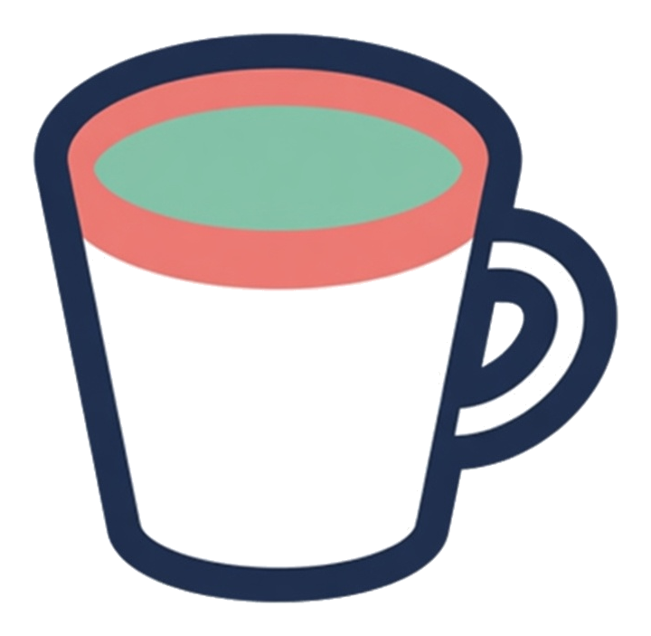

cause
Intervention vs observation
Watching who already drinks the coffee is not the same as handing them the cup.
Two people already drink, and they are ill. One person has no cup, and they are well. Does giving a cup to the well person make them ill?


Ill
Ill
Well
Watching. Recording who already drinks coffee also records the other habits that came with the cup.
Handing over the cup. Assigning the coffee is a button you press, and that difference from merely watching is called do-calculus.
A bad adjustment. If a medicine sends people home sooner and you then compare only people who left together, you have adjusted for a thing the medicine caused.